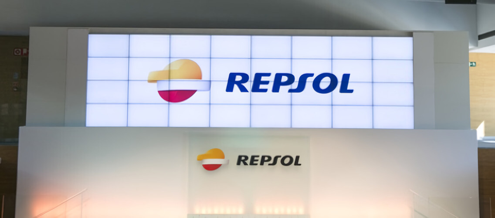

Noticias

Un ciberataque golpea una base de datos de clientes de Repsol en España: nombres y DNI entre la información comprometida
Septiembre 19, 2024 publicado por Javier Márquez para Xataka
Si eres uno de los clientes de Repsol en España existe la posibilidad de que algunos de tus datos personales se hayan visto comprometidos recientemente. Europa Press señala que la multinacional energética se ha visto afectada por un ciberataque.
La compañía ha dicho que se detectó un incidente de seguridad en uno de sus proveedores el pasado 10 de septiembre. Durante el mismo, explican, un actor no autorizado obtuvo “acceso parcial” a la base de datos de clientes de electricidad y gas del país.
Alcances y medidas del ciberataque a Repsol
Al momento de publicar este artículo no se ha indicado el nombre de la compañía externa afectada ni el número de clientes alcanzados por la actividad de los ciberdelincuentes. Repsol asegura que no se han filtrado “datos sensibles” como cuentas bancarias y datos de tarjetas.
También dicen que no quedaron expuestas contraseñas o información de consumo eléctrico. Sin embargo, añaden que “los datos afectados son nombre y apellidos, DNI, domicilio, datos de contacto y CUPS”. CUPS son las siglas de Código Universal de Punto de Suministro.
La mencionada agencia de noticias dice que la compañía puso en marcha medidas para subsanar el incidente “de manera inmediata”, y que la situación ha sido reportada a las autoridades. Asimismo, han comenzado a informar a los clientes impactados.
Si eres uno de los clientes afectados deberías recibir un correo electrónico en el que la compañía te informa sobre el incidente. En cualquier caso, esta es una buena oportunidad para recordar que nuestros datos pueden acabar expuestos por diferentes incidentes.
La información filtrada podría ser utilizada por actores maliciosos para desarrollar otros tipos de actividades maliciosas, por ejemplo, campañas de suplantación de identidad. En este sentido, debemos estar muy atentos a los correos electrónicos que recibamos.
En la dark web existe un enrome mercado de datos robados. Se trata de una porción de la deep web que no está indexada por los motores de búsqueda en la que los ciberdelincuentes pueden ocultar su identidad y comerciar información utilizando criptomonedas.
Muchos de los datos comprometidos en incidentes de seguridad acaban en esta parte de la Web, y muchas personas ni siquiera lo saben. Por tal motivo, como decimos, debemos agudizar nuestras prácticas de seguridad y prevención después de cualquier incidente.
Hemos contactado a Repsol y nos han dicho que, de momento, no tienen más información para compartir.